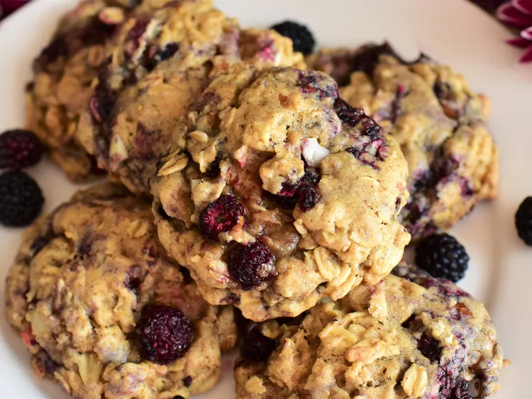

Almond Oatmeal Cookies With Raspberries

Description
These chewy oatmeal cookies deviate from the norm thanks to the addition of almond butter, sliced almonds, and black raspberries. If frozen black raspberries are difficult to find where you live, you can replace them with either frozen red raspberries or frozen blackberries–just make sure to give them a rough chop before adding to the batter, since they're often bigger than black raspberries.
Ingredients
- 1/2 cup unsalted butter, softened
- 1/2 cup almond butter, at room temperature
- 1 cup firmly packed brown sugar
- 1/2 cup white sugar
- 2 large eggs, at room temperature
- 2 teaspoons vanilla extract
- 1/4 teaspoon almond extract
- 1 1/2 cups all-purpose flour
- 1 teaspoon baking soda
- 1 teaspoon ground cinnamon
- 1/2 teaspoon ground nutmeg
- 1/2 teaspoon salt
- 3 cups old fashioned rolled oats
- 1/2 cup sliced almonds
- 1 1/2 cups frozen black raspberries
Steps
- Preheat the oven to 350 degrees F (175 degrees C). Line two baking sheets with parchment paper or silicone baking mats.
- In a large bowl, beat butter, almond butter, brown sugar, and white sugar together until light and fluffy. Add in eggs, vanilla, and almond extract, and mix until thoroughly incorporated. Add in flour, baking soda, cinnamon, nutmeg, and salt, and mix until just combined. Fold in oats and sliced almonds until incorporated. Gently fold in frozen black raspberries (do not thaw first) until evenly dispersed in the dough.
- Drop rounded 1 1/2 tablespoon-sized balls of dough 1 inch apart onto the prepared baking sheets.
- Bake in the preheated oven until the bottoms of cookies are just beginning to turn golden brown, 12 to 14 minutes (do not overbake). Allow cookies to cool 5 minutes on the baking sheet before removing to a wire rack to cool completely.